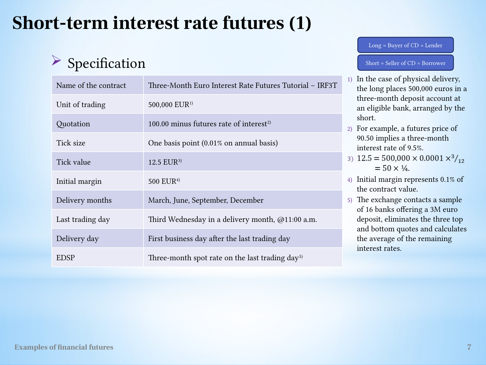
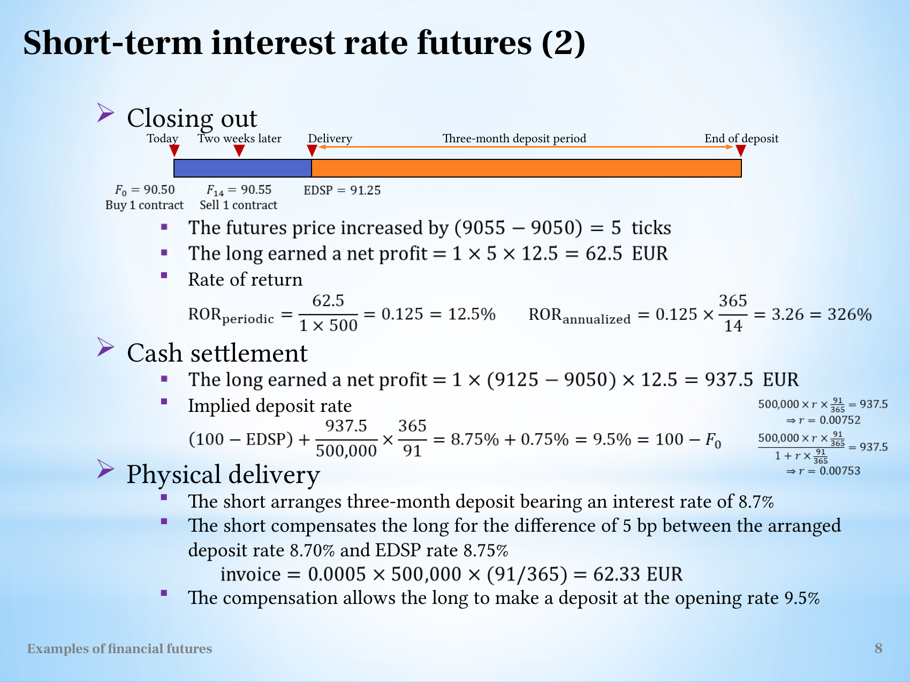

Translate interest-rate futures quotations into a conditional lender hedge
Explanation, worked examples and practice
Useful first: Convert futures quotations into payoff and conditional loss bounds
Outcome and conditions
Quotation, tick value and the deposit period Cash settlement and the effective deposit rate The slide's day-count and payment-timing qualification Physical delivery and compensation for a lower deposit rate
Study conditions, assessment scope and sources
Compute a supplied short-term interest-rate future and derive its effective lender rate with an explicitly consistent accrual convention. Required components: inverse_quote_tick_and_direction, alternative_payoff_and_margin_return, consistent_effective_rate_and_timing_limit, physical_lower_rate_compensation. Supported work may use the cited notes; independent checks use no notes, internet, solution or hints. A basic calculator and blank paper are allowed; reasoning, formula selection and assumptions must be supplied by the learner. Numerical examples below are agent-created hypothetical instantiations unless explicitly labelled as a finished-note example. They do not assert current market or policy facts.
Prerequisites and checks
Check the prerequisites
O011-P1 / item_version 1: O002 is needed because quote points and cash multipliers must remain distinct. Prompt: Annual rate changes by0.01 percentage point. Decimal change? Key: 0.0001, one basis point; not0.01 decimal. Pass requires the keyed mechanism and qualification; partial means an omitted step; fail means a conflicting mechanism. Adequate committed evidence under a compatible criterion permits skipping this diagnostic. Otherwise repair through Outcome and conditions before continuing.
Motivation and explanation
A futures price \(F=100-i\) uses \(i\) as an annual percentage, not a decimal fraction. A one-point price change is a one-percentage-point rate move in the opposite direction. A \(0.01\) quote-point tick represents \(0.0001\) annual decimal, so principal \(L\) and accrual fraction \(\tau\) imply tick value \(L(0.0001)\tau\). A lender loses spot interest when rates fall; a long future then gains because \(F\) rises. For matching principal, undiscounted effective interest cash is \(L i_{\mathrm{spot}}\tau+G\), so \(i_{\mathrm{effective}}=i_{\mathrm{spot}}+G/(L\tau)\). A consistent quarter-year tick and matching accrual \(.25\) produce the initial implied rate. The notes identify a different \(91/365\) fraction and payment-timing inconsistency; do not silently mix them or equate this simple algebra to an exact hedge including all daily cash-flow discounting. A physically arranged rate lower than the benchmark requires the separate \(\text{difference}\times\text{principal}\times\text{specified accrual}\) compensation; the benchmark and received rate are distinct.
Read the full explanation
Reading context
Deliver these complete reused passages before the worked example; the earlier concise teaching prompts are checkpoints, not substitutes. Necessary prerequisite lessons remain the routes specified above. Course-organization details in O001 are supporting context, not additional scoring components.
Source passage
Origin: reused complete checked passage Short-term interest rate futures; fingerprint 60171e496c1089e75dcac3575612a0518e958cac6a80dbe02da9b438b622a003. Heading depth alone is adapted.
Short-term interest rate futures
Why can a long interest-rate futures position gain when an interest rate falls, and how can a future deposit earn an opening rate agreed earlier? The tutorial contract quotes 100 minus an annual interest rate expressed in percent. Its price therefore moves in the opposite direction from that rate. Its tick value converts a one-basis-point annual rate change into the interest on a three-month EUR 500,000 deposit. These are hypothetical specifications, rather than current exchange terms. L11(ExamplesOfFinancialFutures).pptx, slide 2 L11(ExamplesOfFinancialFutures).pptx, slide 7
Quotation, tick value and the deposit period
The Three-Month Euro Interest Rate Futures Tutorial (IRF3T) has EUR 500,000 principal. With \(i_{\%}\) the annual interest rate in percentage points,
Thus \(F=90.50\) corresponds to a 9.50% annual rate for a three-month deposit. A one-basis-point change is 0.01 percentage point, or 0.0001 as a decimal annual rate. The source fixes the tick value using a quarter-year accrual:
A higher quotation corresponds to a lower implied rate. The long's positive futures gain can then offset the smaller interest earned on a future deposit. The source calls the long the buyer of a certificate of deposit (CD), hence the lender, and the short the CD seller/borrower. For physical delivery, the long places EUR 500,000 in a three-month deposit at an eligible bank arranged by the short. L11(ExamplesOfFinancialFutures).pptx, slide 7

The complete specification includes the borrower/lender labels and the quarter-year tick derivation. L11(ExamplesOfFinancialFutures).pptx, slide 7
Initial margin is EUR 500, 0.1% of principal. Delivery months are March, June, September and December. The last trading day is the third Wednesday of the delivery month at 11:00 a.m.; delivery follows on the next business day. The source's specification describes EDSP as the three-month spot rate: the exchange samples 16 banks, removes the three highest and three lowest rates, and averages the remaining ten. The worked settlement example instead writes EDSP as a futures quotation, \(91.25=100-8.75\), so the underlying spot deposit rate is 8.75%. Keep rate units and quoted-price units distinct despite this source-label difference. L11(ExamplesOfFinancialFutures).pptx, slide 7 L11(ExamplesOfFinancialFutures).pptx, slide 8
Closing the futures before the deposit begins
The long buys one contract at \(F_0=90.50\) and closes two weeks later at \(F_{14}=90.55\). The five-tick rise represents a five-basis-point fall in the implied rate, from 9.50% to 9.45%. Its profit is
Using the source's opening-margin denominator, the 14-day return is \(62.5/500=12.5\%\). Simple annual scaling gives \(0.125\times365/14\approx3.26=326\%\). This closed position has no later delivery obligation. The result belongs to the margin trade, not a 12.5% interest return on EUR 500,000. L11(ExamplesOfFinancialFutures).pptx, slide 8
Cash settlement and the effective deposit rate
If the original position instead remains open to settlement, EDSP is shown as 91.25. Its 75-tick gain is
The accompanying spot deposit rate is 8.75%. A gain in euros can be expressed as an additional annual rate by dividing by principal and deposit-year fraction. For a principal \(L\) and deposit duration \(\tau\) years,
This is the source's accounting interpretation: combine deposit interest with the settled futures gain. With the tick's own quarter-year convention, \(\tau=1/4\), the gain adds \(937.5/(500000/4)=0.0075\), or 0.75 percentage point. The effective annual rate is then \(8.75\%+0.75\%=9.50\%=100-F_0\). L11(ExamplesOfFinancialFutures).pptx, slide 7 L11(ExamplesOfFinancialFutures).pptx, slide 8
The slide's day-count and payment-timing qualification
Slide 8 converts the same EUR 937.50 using \(\tau=91/365\), rather than the \(3/12\) used for the tick value on slide 7. Its expression gives
The slide reports this as 9.5%, so exact equality to the opening rate depends on keeping a consistent year fraction or accepting rounding. This difference is a source convention mismatch, not an extra market gain. L11(ExamplesOfFinancialFutures).pptx, slide 7 L11(ExamplesOfFinancialFutures).pptx, slide 8
The source also displays both \(500000\,r(91/365)=937.5\), giving \(r\approx0.00752\), and a discounted version
giving \(r\approx0.00753\). The first treats the amount as interest over the period; the second treats it as a discounted amount. Slide 8 does not supply a full funding/timing convention reconciling these alternatives with daily marking to market. They should not be presented as one exact universal deposit-hedge identity. The reliable general result is the direction of the hedge and its unit conversion under an explicitly fixed accrual convention. L11(ExamplesOfFinancialFutures).pptx, slide 8
Physical delivery and compensation for a lower deposit rate
The source's physical example lets the short arrange a deposit at 8.70%, which is five basis points below the 8.75% EDSP spot rate. It compensates the long for that difference:
The five-basis-point compensation bridges the arranged rate to the benchmark. The opening-to-delivery futures gain bridges the benchmark to the opening futures rate. Both components are needed for the lecture's intended 9.5% deposit-rate interpretation, subject to the quarter-year versus \(91/365\) and payment-timing qualifications above. The diagram separates the futures trading period from the subsequent three-month deposit period, preventing those periods from being confused. L11(ExamplesOfFinancialFutures).pptx, slide 8

The source gives three alternative exit paths and uses two accrual/payment conventions in its effective-rate illustration. L11(ExamplesOfFinancialFutures).pptx, slide 8
What to carry forward
With this quotation, a long gains when the implied rate falls. Tick value depends on principal, the annual rate increment and the deposit duration. A deposit hedge combines the deposit's actual interest with futures gains and any delivery-rate compensation, using consistent units and day counts. Stock index and currency futures develops the common tick and margin-return calculation. The deposit application adds an interest-accrual period distinct from the futures holding period. L11(ExamplesOfFinancialFutures).pptx, slide 7 L11(ExamplesOfFinancialFutures).pptx, slide 8
Worked example
O011-W1 / item_version 1, worked_example. Prompt: Hypothetical three-month IR future: \(\mathrm{EUR}\,500000\) principal, \(F=100-\text{annual rate in percent}\), tick \(0.01\) quote point, agreed quarter-year fraction \(0.25\), initial margin \(\mathrm{EUR}\,500\) per contract. A lender/depositor buys \(1\) at \(90.50\); it could close at \(90.55\) after \(14\) days or instead hold to price EDSP \(91.25\). Derive tick value and position direction; compute close \(\mathrm{P/L}\), margin return and simple \(365\)-day annualisation, held \(\mathrm{P/L}\), annual spot rate and effective deposit rate for matching total principal. For alternative physical placement at a rate \(0.05\) percentage point below the benchmark, calculate separate compensation using the same \(0.25\) fraction, add it to the actual interest and the held futures gain, and derive the final effective rate. Derive the rate adjustment from cash flows. Explain why using \(91/365\) instead changes the result and why the illustration is not a universal discounted daily-futures hedge.
Steps and interpretation: Tick in rate is \(0.01\text{ percentage point}=.0001\text{ annual decimal}\). \(\text{Tick money}=500000\times.0001\times.25=\mathrm{EUR}12.50\). Price rises when rate falls, so long hedges a lender against falling deposit rates; a borrower exposed to rising rates takes short. Close \(G=1\times 12.5\times (90.55-90.50)/.01=\mathrm{EUR}62.500000\); margin return \(12.5\%\), annualised \(325.893\%\). Held \(G=\mathrm{EUR}937.500000\); \(\text{spot rate}=(100-91.25)/100=0.087500\) annual decimal. Matching principal \(\mathrm{EUR}\,500000\), \(\text{cash interest }L\times\text{spot}\times.25\); add \(G\) and divide by \(L\times.25\) gives effective rate \(9.5\%\), the entry-implied \(9.50\%\). Physical received \(\text{rate}=8.7\%\); \(\text{compensation}=L\times(i_{\mathrm{benchmark}}-i_{\mathrm{received}})\times.25=\mathrm{EUR}\,62.500000\). \(\text{Actual interest}=L\times 0.087000\times .25\) plus compensation restores benchmark interest; adding held futures \(G\) then gives the same \(9.5\%\) effective annual rate. Futures gain and placement compensation are distinct flows, not the same payment counted twice. This uses one consistent quarter-year convention and undiscounted comparison. Replacing only denominator \(.25\) with \(91/365\) mixes conventions and slightly changes the effective rate; explicit all-leg day-count/timing treatment is needed. The note records unreconciled source discounted/non-discounted expressions, so no universal exact daily-settled hedge or margin-account value is claimed. Close and held paths are alternative outcomes.
Supported completion
Write your reasoning, then reveal the complete key to check each step.
A local draft for your own study.
Reveal explanation
Key: Tick in rate is \(0.01\text{ percentage point}=.0001\text{ annual decimal}\). \(\text{Tick money}=500000\times.0001\times.25=\mathrm{EUR}12.50\). Price rises when rate falls, so long hedges a lender against falling deposit rates; a borrower exposed to rising rates takes short. Close \(G=2\times 12.5\times (95.03-95.00)/.01=\mathrm{EUR}75.000000\); margin return \(7.5\%\), annualised \(273.75\%\). Held \(G=\mathrm{EUR}500.000000\); \(\text{spot rate}=(100-95.20)/100=0.048000\) annual decimal. Matching principal \(\mathrm{EUR}\,1000000\), \(\text{cash interest }L\times\text{spot}\times.25\); add \(G\) and divide by \(L\times.25\) gives effective rate \(5\%\), the entry-implied \(5.00\%\). Physical received \(\text{rate}=4.75\%\); \(\text{compensation}=L\times(i_{\mathrm{benchmark}}-i_{\mathrm{received}})\times.25=\mathrm{EUR}\,125.000000\). \(\text{Actual interest}=L\times 0.047500\times .25\) plus compensation restores benchmark interest; adding held futures \(G\) then gives the same \(5\%\) effective annual rate. Futures gain and placement compensation are distinct flows, not the same payment counted twice. This uses one consistent quarter-year convention and undiscounted comparison. Replacing only denominator \(.25\) with \(91/365\) mixes conventions and slightly changes the effective rate; explicit all-leg day-count/timing treatment is needed. The note records unreconciled source discounted/non-discounted expressions, so no universal exact daily-settled hedge or margin-account value is claimed. Close and held paths are alternative outcomes.
Allowed support: show the named definition or equation in Motivation and explanation, then ask for the missing substitution and interpretation. At most two hints: first identify the relevant distinction; second point to the first keyed step. Reveal the worked solution if those fail. Supported success does not establish acquisition. Fade assistance only once the learner explains the keyed steps; then hide the solution and use an unused full check.
Rubric and independence
Self-assessment criteria and tutor checks
Pass requires every listed component, all requested outputs and essential keyed reasoning without a critical conceptual error. Algebraically equivalent formulas, explicitly defined opposite cash-flow signs and equivalent plain-language reasoning are accepted. Partial means a missing component or a correct method with an unresolved isolated arithmetic slip; fail means the central mechanism or condition is wrong. Unscorable means the response or help/exposure conditions cannot be established. Unknown conditions never certify independence. Arithmetic slips require independent correction before a pass. No numerical grade is invented.
Critical errors: Treating quote tick as0.01 annual decimal; short for a lender against falling rates; adding money directly to a rate; mixing fractions; universalising unreconciled source expressions.
Acquisition requires two distinct unassisted passes from I1/I2/D1/D2 using the exact six routes in metadata. Each full prompt and key covers every component; any pair therefore covers the whole outcome twice. A fresh D item used for acquisition cannot later certify delayed retention. Worked/support/prerequisite items and the narrow C1 correction cannot substitute for a full check. The finite bank must not be reused after exposure; request a plan_issue when fewer than two fresh full items remain.
| Component | I1 | I2 | D1 | D2 |
|---|---|---|---|---|
| inverse_quote_tick_and_direction | required | required | required | required |
| alternative_payoff_and_margin_return | required | required | required | required |
| consistent_effective_rate_and_timing_limit | required | required | required | required |
| physical_lower_rate_compensation | required | required | required | required |
Misconceptions and correction
A correct gain with a wrong effective rate often arises from an inconsistent accrual denominator. State each rate in annual decimal and each time fraction before adding money to interest. Observe the learner's reasoning before diagnosing: a sign or omitted word alone is tentative. Score before help. O011-C1 / item_version 1, narrow_correction. Fresh prompt: Fresh narrow check: a matched lender has spot interest rate4%, principal200000, \(\tau\).25 and futures gain500. Effective annual decimal? Key and rubric: \(\frac{.04\times200000\times.25+500}{200000\times.25}=.05=5\%\); money500 must first be divided by \(\text{principal}\times\text{time}\). Pass only if the keyed repaired component is supplied; partial for an omission or arithmetic slip; fail for the same conflicting mechanism. C1 is not a full independent check. After two ineffective hints show the relevant worked step; after another failed correction pause and return to the named prerequisite or explanation.
Immediate and delayed checks
All items are item_version 1 and full_capability_check. I1/I2 are immediate forms; D1/D2 are distinct delayed forms. Delayed success requires an unused unassisted item before recap, at least 24 actual elapsed hours after acquisition and the most recent relevant teaching/solution exposure, with intervening exposure recorded. A date change alone does not qualify. Early D attempts may be acquisition checks only. Each item is a bounded parallel or near-context variant, not proof of broad transfer. Each key states the full required response; do not improvise extra variants.
A local draft for your own study.
Reveal explanation
Key and essential rubric: Tick in rate is \(0.01\text{ percentage point}=.0001\text{ annual decimal}\). \(\text{Tick money}=500000\times.0001\times.25=\mathrm{EUR}12.50\). Price rises when rate falls, so long hedges a lender against falling deposit rates; a borrower exposed to rising rates takes short. Close \(G=3\times 12.5\times (95.98-96.00)/.01=\mathrm{EUR}-75.000000\); margin return \(-5\%\), annualised \(-228.125\%\). Held \(G=\mathrm{EUR}-1500.000000\); \(\text{spot rate}=(100-95.60)/100=0.044000\) annual decimal. Matching principal \(\mathrm{EUR}\,1500000\), \(\text{cash interest }L\times\text{spot}\times.25\); add \(G\) and divide by \(L\times.25\) gives effective rate \(4\%\), the entry-implied \(4.00\%\). Physical received \(\text{rate}=4.35\%\); \(\text{compensation}=L\times(i_{\mathrm{benchmark}}-i_{\mathrm{received}})\times.25=\mathrm{EUR}\,187.500000\). \(\text{Actual interest}=L\times 0.043500\times .25\) plus compensation restores benchmark interest; adding held futures \(G\) then gives the same \(4\%\) effective annual rate. Futures gain and placement compensation are distinct flows, not the same payment counted twice. This uses one consistent quarter-year convention and undiscounted comparison. Replacing only denominator \(.25\) with \(91/365\) mixes conventions and slightly changes the effective rate; explicit all-leg day-count/timing treatment is needed. The note records unreconciled source discounted/non-discounted expressions, so no universal exact daily-settled hedge or margin-account value is claimed. Close and held paths are alternative outcomes. All components are required.
A local draft for your own study.
Reveal explanation
Key and essential rubric: Tick in rate is \(0.01\text{ percentage point}=.0001\text{ annual decimal}\). \(\text{Tick money}=500000\times.0001\times.25=\mathrm{EUR}12.50\). Price rises when rate falls, so long hedges a lender against falling deposit rates; a borrower exposed to rising rates takes short. Close \(G=4\times 12.5\times (94.54-94.50)/.01=\mathrm{EUR}200.000000\); margin return \(10\%\), annualised \(304.167\%\). Held \(G=\mathrm{EUR}2000.000000\); \(\text{spot rate}=(100-94.90)/100=0.051000\) annual decimal. Matching principal \(\mathrm{EUR}\,2000000\), \(\text{cash interest }L\times\text{spot}\times.25\); add \(G\) and divide by \(L\times.25\) gives effective rate \(5.5\%\), the entry-implied \(5.50\%\). Physical received \(\text{rate}=5.05\%\); \(\text{compensation}=L\times(i_{\mathrm{benchmark}}-i_{\mathrm{received}})\times.25=\mathrm{EUR}\,250.000000\). \(\text{Actual interest}=L\times 0.050500\times .25\) plus compensation restores benchmark interest; adding held futures \(G\) then gives the same \(5.5\%\) effective annual rate. Futures gain and placement compensation are distinct flows, not the same payment counted twice. This uses one consistent quarter-year convention and undiscounted comparison. Replacing only denominator \(.25\) with \(91/365\) mixes conventions and slightly changes the effective rate; explicit all-leg day-count/timing treatment is needed. The note records unreconciled source discounted/non-discounted expressions, so no universal exact daily-settled hedge or margin-account value is claimed. Close and held paths are alternative outcomes. All components are required.
A local draft for your own study.
Reveal explanation
Key and essential rubric: Tick in rate is \(0.01\text{ percentage point}=.0001\text{ annual decimal}\). \(\text{Tick money}=500000\times.0001\times.25=\mathrm{EUR}12.50\). Price rises when rate falls, so long hedges a lender against falling deposit rates; a borrower exposed to rising rates takes short. Close \(G=5\times 12.5\times (96.97-97.00)/.01=\mathrm{EUR}-187.500000\); margin return \(-7.5\%\), annualised \(-182.5\%\). Held \(G=\mathrm{EUR}-1875.000000\); \(\text{spot rate}=(100-96.70)/100=0.033000\) annual decimal. Matching principal \(\mathrm{EUR}\,2500000\), \(\text{cash interest }L\times\text{spot}\times.25\); add \(G\) and divide by \(L\times.25\) gives effective rate \(3\%\), the entry-implied \(3.00\%\). Physical received \(\text{rate}=3.25\%\); \(\text{compensation}=L\times(i_{\mathrm{benchmark}}-i_{\mathrm{received}})\times.25=\mathrm{EUR}\,312.500000\). \(\text{Actual interest}=L\times 0.032500\times .25\) plus compensation restores benchmark interest; adding held futures \(G\) then gives the same \(3\%\) effective annual rate. Futures gain and placement compensation are distinct flows, not the same payment counted twice. This uses one consistent quarter-year convention and undiscounted comparison. Replacing only denominator \(.25\) with \(91/365\) mixes conventions and slightly changes the effective rate; explicit all-leg day-count/timing treatment is needed. The note records unreconciled source discounted/non-discounted expressions, so no universal exact daily-settled hedge or margin-account value is claimed. Close and held paths are alternative outcomes. All components are required.
A local draft for your own study.
Reveal explanation
Key and essential rubric: Tick in rate is \(0.01\text{ percentage point}=.0001\text{ annual decimal}\). \(\text{Tick money}=500000\times.0001\times.25=\mathrm{EUR}12.50\). Price rises when rate falls, so long hedges a lender against falling deposit rates; a borrower exposed to rising rates takes short. Close \(G=2\times 12.5\times (92.56-92.50)/.01=\mathrm{EUR}150.000000\); margin return \(15\%\), annualised \(608.333\%\). Held \(G=\mathrm{EUR}1500.000000\); \(\text{spot rate}=(100-93.10)/100=0.069000\) annual decimal. Matching principal \(\mathrm{EUR}\,1000000\), \(\text{cash interest }L\times\text{spot}\times.25\); add \(G\) and divide by \(L\times.25\) gives effective rate \(7.5\%\), the entry-implied \(7.50\%\). Physical received \(\text{rate}=6.85\%\); \(\text{compensation}=L\times(i_{\mathrm{benchmark}}-i_{\mathrm{received}})\times.25=\mathrm{EUR}\,125.000000\). \(\text{Actual interest}=L\times 0.068500\times .25\) plus compensation restores benchmark interest; adding held futures \(G\) then gives the same \(7.5\%\) effective annual rate. Futures gain and placement compensation are distinct flows, not the same payment counted twice. This uses one consistent quarter-year convention and undiscounted comparison. Replacing only denominator \(.25\) with \(91/365\) mixes conventions and slightly changes the effective rate; explicit all-leg day-count/timing treatment is needed. The note records unreconciled source discounted/non-discounted expressions, so no universal exact daily-settled hedge or margin-account value is claimed. Close and held paths are alternative outcomes. All components are required.
Content provenance and generation boundaries
Sources and scope
The complete checked-note passages above are reused with only heading-depth adaptation; exact origins and fingerprints are in source_manifest.md. Existing plan-created hypothetical exercises and their full keys are retained from P003; their algebra instantiates the included checked definitions. No new external academic claims are introduced. All figures retain checked vault-relative asset paths, captions and source qualifications. Main examples and assessment routes are fully prepared here.
Preserved assessment contract: only the named prepared full-capability items and six routes may establish acquisition or delayed evidence. Additional verified examples or practice may support explanation but cannot replace a named full check or reassessment gate. Teach may accept an independently verified equivalent method meeting the same pre-answer components and conditions. Ambiguous criteria or an exhausted fresh bank return to plan. The current objective revision is 2; unchanged item/criterion versions remain those explicitly stated above.